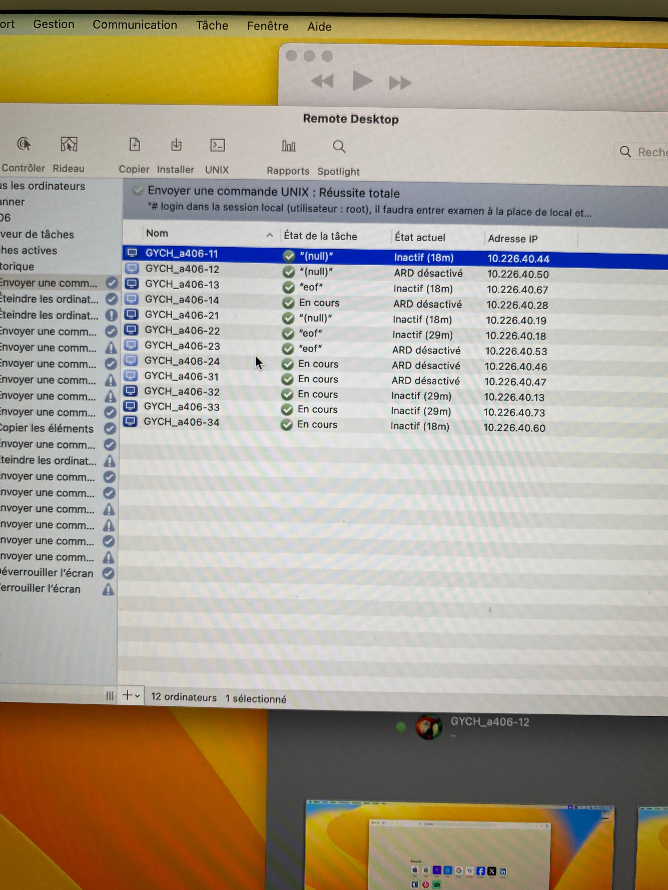
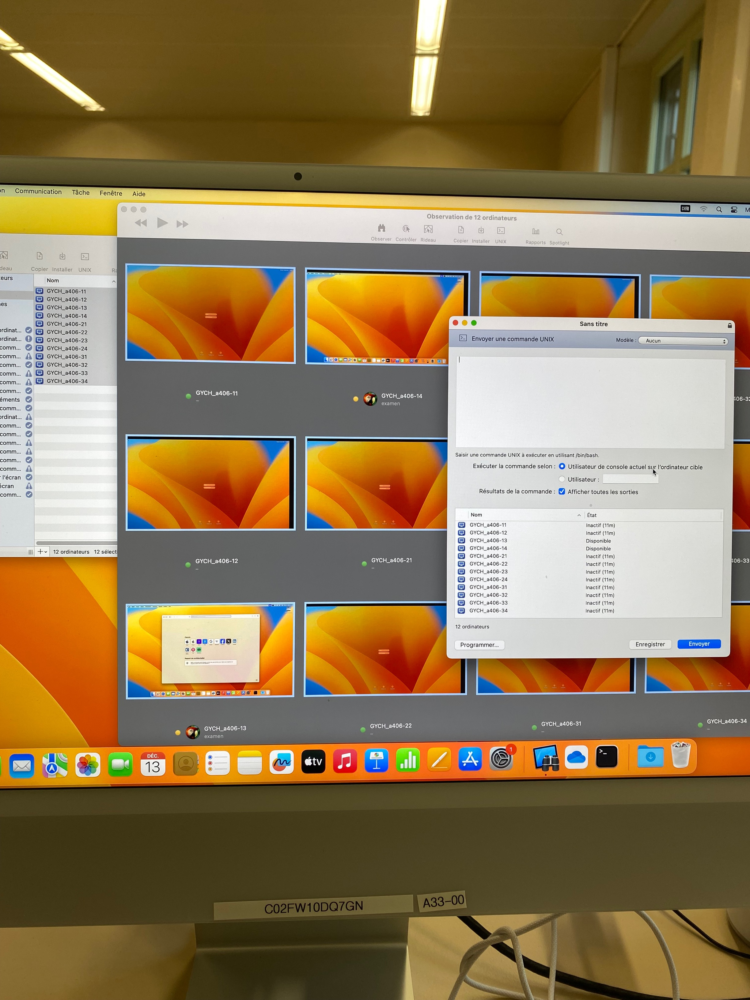
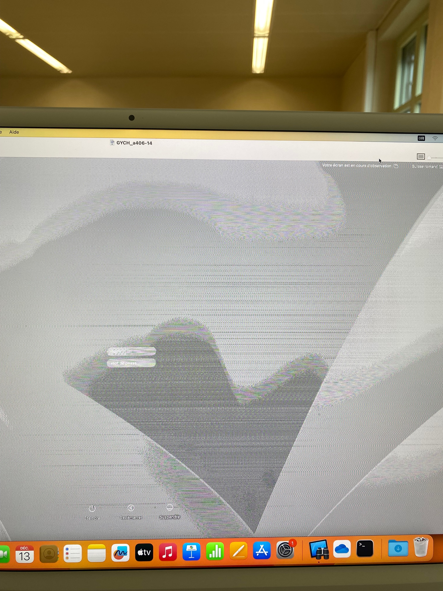
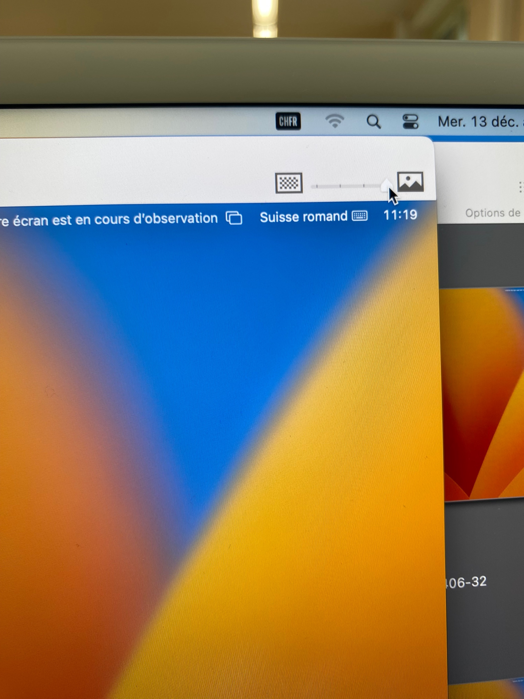
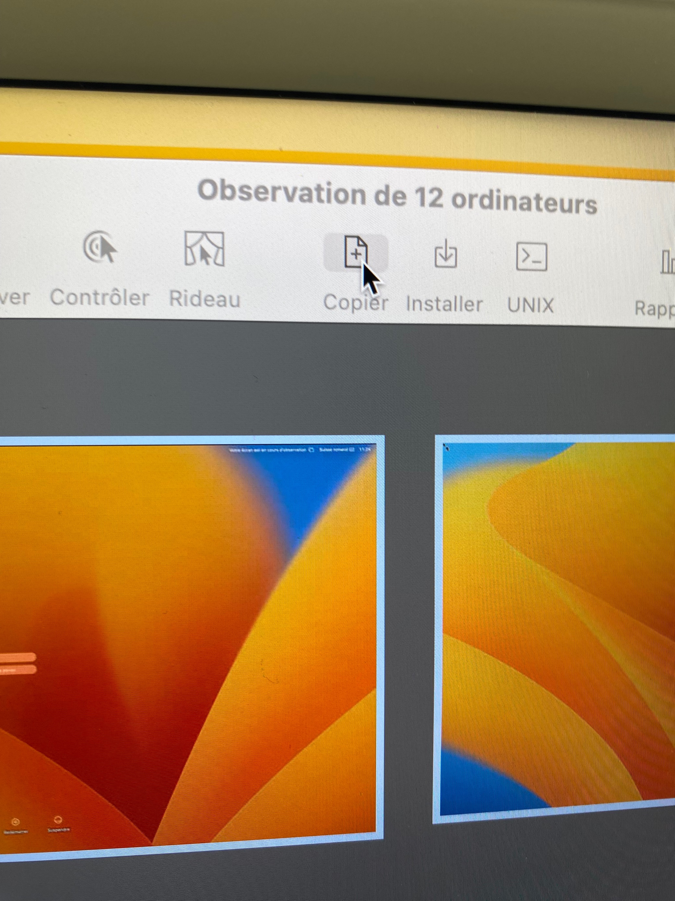
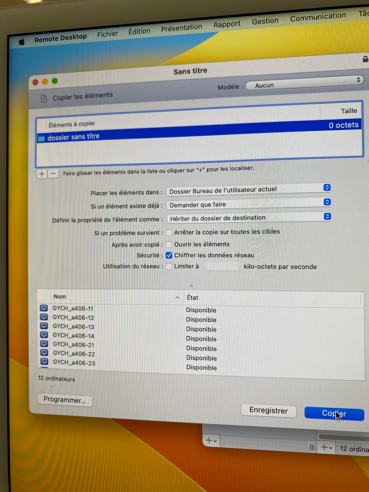
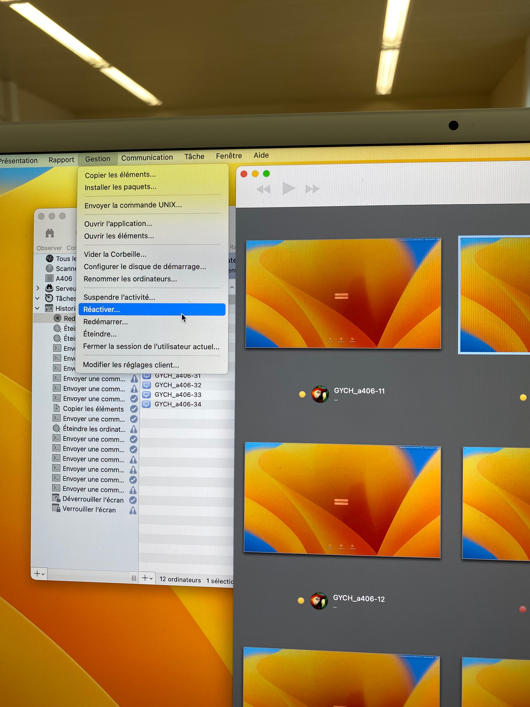

Erreurs fréquentes et leurs solutions#
Sur cette page vous trouverez des erreurs que nous avons souvent rencontrés et dont nous n’avons parlé nulle part ailleurs sur le site de la documentation avec leur solution.
Voici les autres pages qui peut contenir des solution à des erreurs non montioner ici :
Comment régler le problème de Réseau
Erreurs des imprimantes
Problèmes, Solutions PaperCut
Access point Meraki qui clignote/ne fonctionne plus ou switch qui ne fonctionne plus#
Faites bien attention au port qui va de la prise ethernet qui distribue du réseau à l’access point. il se pourrait qu’elle soit réglée sur le mauvais VLAN. le bon vlan est: 32 pour les access point et 1 pour les switch (port trunk), regardez aussi les cables sur les switch car si un cable est branché sur deux ports du switch, il s’agit d’une boucle réseau et il faut débrancher une des deux extrémités.
Message “ARD Désactivé” sur Apple Remote Desktop, quand on essaie de passer une règle UNIX#
Si vous rencontrez ce probléme (voir image ci-dessous:)
{kind=link}
Il faut fermer Apple Remote Desktop et le rouvrir, en faisant un clique droit sur l’icone d’Apple Remote Desktop dans le Dock et en cliquant sur Quitter. Pas d’autre solution trouvée pour le moment, mais celle-ci fonctionne. Il faudrait relancer l’application environ toutes les deux éxécutions de règles UNIX/autres requêtes.
{kind=link}
Problème de droits Apple Remote Desktop#
Si un message est affiché disant qu’Apple RemoteDesktop n’a pas les droits, allez sous Partage > Gestion à distance et soyez sûr que les comptes remote et adminl y figurent, et quand c’est bon il faut cliquer sur options et être sur que tout est bien coché. si c’est le cas, décocher et recocher les deux premières coches devrait résoudre le problème.
Problème de droits osascript (Apple Remote Desktop)#
Ce problème peut arriver dés qu’on essaie d’éxécuter une commande UNIX sur un poste élève. pour régler le problème, il faut se connecter en adminl sur le poste en question puis aller jusqu’au bureau. Dés que c’est fait, il faut lancer la commande unix ConnexionExam, qui se sert de “osascript” pour fonctionner, puis il y aura un petit message de confirmation pour ajouter les droits nécessaires qu’il faudra accepter.
Problème de clé SSH Apple Remote Desktop (GetDesktop)#
Pour régler ce problème, il faut refaire correctement les clés et liaisons SSH sur un poste en session examen vers les poste prof en session remote.
Quand c’est fait, il faut aller à la racine du dossier examen (/Users/examen/.ssh) et copier le dossier .ssh
il faut ensuite copier le dossier vers tous les postes élèves des salles informatique et les redémarrer pour que la commande GetDesktop puisse fonctionner.
Ecrans en noir et blanc sur Apple Remote Desktop#
{kind=link}
Pour régler ce problème, il faut juste aller en haut à droite de l’ordinateur regardé, puis tirer le slider vers la droite pour afficher l’écran en couleur.
{kind=link}
# Comment copier des fichiers ou dossiers vers tous les postes Pour copier un/plusieurs fichiers vers des postes, il faut cliquer sur le petit bouton “Copier” au centre de ARD:
{kind=link}
Vous arriverez sur ce menu:
{kind=link}
Ensuite, il faut glisser le fichier que vous aimeriez copier dans la section du haut, là ou se trouve le “dossier sans titre” sur l’image ci-dessus puis appuyer sur le bouton Copier en bas de la fenêtre.
Redémarrer, éteindre, fermer la session etc. d’ordinateurs avec Remote#
Il faut sélectionner les postes à observer, les observer puis aller sous Gestion > ce que vous souhaiteriez faire aux ordinateurs:
{kind=link}
Le temps que les ordinateurs éxécutent la commande, il y aura un point d’exclamation affiché sur leurs écrans depuis Remote.
Problème de lecteur DVD bloqué#
Il peut arriver que le bouton pour éjecter le disque d’un lecteur ne fonctionne pas et donc que le lecteur soit bloqué si vous n’avez pas de trombone sur vous. Pour régler ce problème, il faut faire un clic droit sur l’icone de disque sur votre bureau et cliquer sur éjecter. Le disque sera éjecté et le problème n’arrivera plus.
Problème disques qui se crééent tout seul sur le bureau#
Ce problème peut surgir à cause d’une régle pour mettre à jour l’OS d’un poste. Si le poste est trop ancien et donc qu’il ne peut pas supporter le nouvel OS, des disques vont se créer car c’est la seule étape de la règle que l’ordinateur peut faire.
Il faut donc mettre le poste dans la liste des exclusions de la règle jamf et supprimer les disques manuellement en allant dans “Utilitaire de disques” sur le poste.
Que faire quand une application “ne parvient plus à se lancer”, qu’elle est corrompue#
Pour commencer, il faudra modifier la règle jamf qui installe l’application s’il y en a une qui existe, puis il faut installer le package le plus récent et le mettre sur jamf admin, la règle… Ensuite il faut faire une règle qui la supprime et qui la réinstalle avec le script GYCH_eventSequence, qui va devoir éxécuter dans l’ordre une règle qui va d’abord supprimer l’application, puis une autre règle qui va télécharger le bon pkg et l’installer sur le poste, voir règles jamf fixOpenboard & fixOneDrive comme inspiration.
Le son ne sort pas sur les hauts parleurs dans les salles de cours#
Vérifiez que les hauts parleurs soient bien branchés et que leur volume est bien réglé. (pas à 0) Ensuite, il faut aller sur le macmini et aller dans Son > choisir la bonne sortie audio (s’il y a un ampli Denon il faut le choisir, etc..) le problème devrait être réglé. Si ce n’est pas le cas, le problème peut soit venir du cable HDMI output/beamer, soit des hauts parleurs (plus rare)
Les boutons pour hausser/baisser le bureau prof ne marchent pas#
L’alimentation qui passe de derrière les boutons à la multiprise qui se trouve à l’arrière du bureau est probablement mal branchée.
Wacom / ordi perso / camera qui fonctionne mais pas projeté au beamer#
Il faut commencer par vérifier que tous les câbles HDMI sous le bureau soient bien branchés, car il peut arriver qu’ils soient légèrement débranchés de sorte à ce que ça soit très difficillement visible à l’oeil.
Message “Wacom Desktop Center…” au démarrage d’une session#
Il faut être en adminl et dans les paramètres de confidentialité, donner les droits sous “Surveillance de l’entrée” à Wacom Desktop Center